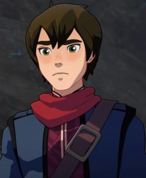

Xadia, que é repleto de magia provinda dos seis elementos primordiais: o Sol, a Lua, as Estrelas, a Terra, o Céu, e o Oceano. Contudo, os humanos — que não podem utilizar a mágica primordial — descobriram o uso da magia sombria, cuja energia deriva da essência vital de animais e de criaturas mágicas. Como consequência, eles foram expulsos pelos dragões e pelos elfos de Xadia para o outro lado do continente, onde eles formaram os cinco reinos humanos. 1200 anos depois, os humanos mataram o rei dragão e supostamente destruíram o ovo que continha seu herdeiro, e a guerra torna-se iminente. Os elfos da lua tentam assassinar o rei humano, Harrow, e seu herdeiro, o jovem príncipe Ezran, em retalhação pela destruição do ovo. Uma dentre dos elfos, a jovem Rayla, junto de Ezran e de seu meio-irmão mais velho Callum, descobrem que o ovo do rei dragão não fora de fato destruído, mas sim roubado pelo mago Viren, o conselheiro do rei Harrow. Juntos, eles encaram uma jornada para retornar o ovo aos dragões e impedir a guerra entre humanos e elfos. Mas Viren, com intenções de perpetuar o conflito, toma o poder após o rei morrer assassinado, e envia seus filhos Claudia e Soren atrás dos fugitivos para matar os príncipes e recuperar o ovo a qualquer custo, ate mesmo a morte de um de seus filhos.
Rayla: Paula Burrows
Ezran: Sasha Rojen
Callum: Jack De Sena